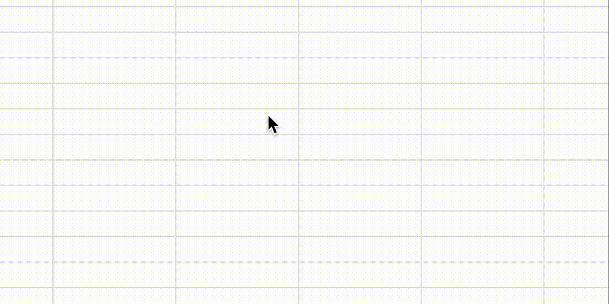

gas

テストgas
概要
テストファイルです
function getFileList() {
// 1. フォルダIDを指定（フォルダのURL末尾にある英数文字列）
const folderId = 'YOUR_FOLDER_ID_HERE';
const folder = DriveApp.getFolderById(folderId);
// 2. フォルダ内のファイルを取得（イテレータ）
const files = folder.getFiles();
// 3. ループで1つずつ取り出す
while (files.hasNext()) {
const file = files.next();
const name = file.getName();
const url = file.getUrl();
console.log('ファイル名: ' + name + ' / URL: ' + url);
}
}
